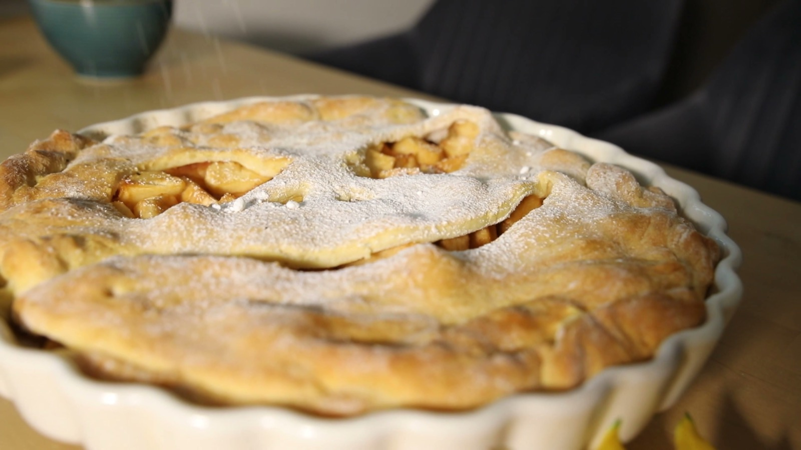

Halloween Apple Pie
- 1 h 30 min
- 8 servings
- Dessert
Six apples, cinnamon and a top crust with a jack-o'-lantern face cut into it. The face is the easy part.
Ingredients
- apples6
- sugar120 g
- cinnamon1 tsp
- lemon juice1 tbsp
- flour2 tbsp
- butter20 g
- pie dough2 sheets
- egg, beaten1
- powdered sugar to finish
Directions
- Heat the oven to 200°C / 400°F.
- Peel and slice the apples. Toss with the sugar, cinnamon, lemon juice and flour.
- Line a pie dish with one sheet of dough and fill it with the apples. Dot with butter.
- Cut a jack-o'-lantern face into the second sheet, lay it on top and press the edges. Brush with egg.
- Bake for 45 minutes, until the crust is golden. Cool for 20 minutes and dust with powdered sugar.
Keep this recipe on your phone
Paste the link to this page into Import in TasteKeep, or tap Share on this page and choose TasteKeep. The recipe lands in your book with the photo, ingredients and steps, and cooking mode runs the 45-minute timer for you.
TasteKeep for iPhone and iPad. Free on the App Store. No account, no subscription.
From the video. Photo: a frame from the Pexels series used in it.